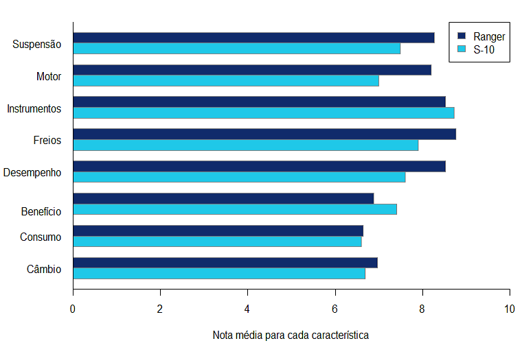
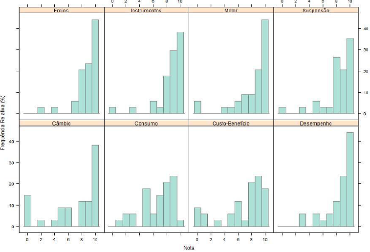
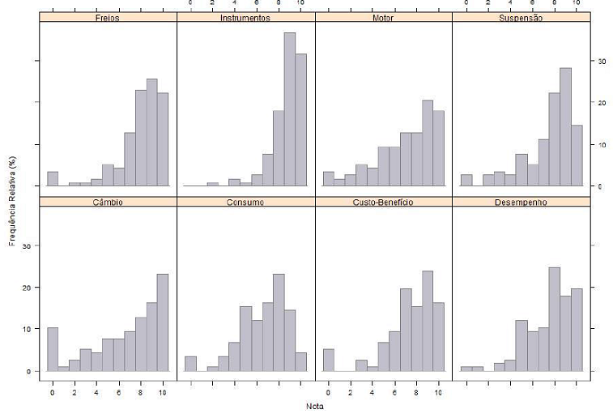

Contextualização
- Na sociedade do século XXI é essencial a mobilidade, o usufruto do direito de ir e vir.
- Nesse contexto entram os automóveis.
- Com base nisso, será apresentado uma análise exploratória de dados comparando dois automóveis.
- Neste trabalho será aplicada à comparação dos seguintes automóveis:
- O S-10, da Chevrolet e o Ranger, da Fox; ambas picapes no mesmo estilo e faixa de preço.
- Os dados para estudo foram retirados da avaliação feita pelo site carrosnaweb.com.br/opiniao
- Objetivo: Qual carro é a melhor opção para o consumidor.
Análise dos resultados

Interpretação - Nos aspectos suspensão, motor, freios, desempenho, consumo e câmbio o carro Ranger supera o S-10 - Enquanto nas características instrumentos e custo-benefício o S-10 tem melhor média. - A média, assim como a maioria dos outros métodos, não é uma ferramenta 100% conclusiva. - Por esse motivo serão aqui expostas outras comparações visando uma melhor avaliação de acordo com os desejos do consumidor.
Medidas descritivas
- Resumo das notas do carro Ranger
| Mínimo |
0 |
0 |
3 |
| Mediana |
9 |
8 |
5 |
| Máximo |
10 |
10 |
9 |
| Média |
8.58 |
6.76 |
5.5 |
| Desv. Pad. |
1.77 |
3.16 |
1.77 |
- Resumo das notas do carro S-10
| Mínimo |
0 |
0 |
7 |
| Mediana |
8 |
8 |
8 |
| Máximo |
10 |
10 |
9 |
| Média |
7.49 |
7.32 |
7.75 |
| Desv. Pad. |
2.35 |
2.60 |
0.70 |
- Em uma interpretação à grosso modo da média, vemos que enquanto a média do Ranger cai conforme o tempo de uso a do S-10 mantém-se entre 7.48 e 7.75.
- A representação e exposição de medidas em forma de tabela, embora útil é muitas vezes de difícil compreensão para àqueles sem tanta prática.
- Por isso o gráfico para a tomada de decisão do consumidor entre os dois carros é a melhor ferramenta
Análise Ranger

- Vê-se que nas características freios, instrumentos, motor, suspensão, câmbio e desempenho do Ranger uma boa parte das avaliações concentra-se nas maiores notas.
- Consumo e custo-benefício há uma maior dispersão nas notas dadas.
Análise S-10

- Nas notas do veículo S-10 há uma distribuição bem maior que as do Ranger.
- Verifica-se que no Ranger a frequência de notas máximas é evidentemente superior às do S-1.
- Desse modo a avaliação da melhor escolha com base nos itens observados começa a tomar forma.
- Necessidade de novas avaliações gráficas
Conclusão
- Vemos que o carro Ranger, mesmo com a divisão de data de fabricação possui em grande parte avaliações melhores que o S-10
- Diferença mais visível nos veículos de 2012, onde em 100% das notas médias o Ranger supera o S-10
- Com base na análise gráfica realizada é clara a superioridade do veículo Ranger sobre o S-10 dentro das características estudadas
- Logicamente que estes itens podem não ser os de interesse de determinado consumidor, o que levaria a outro estudo.